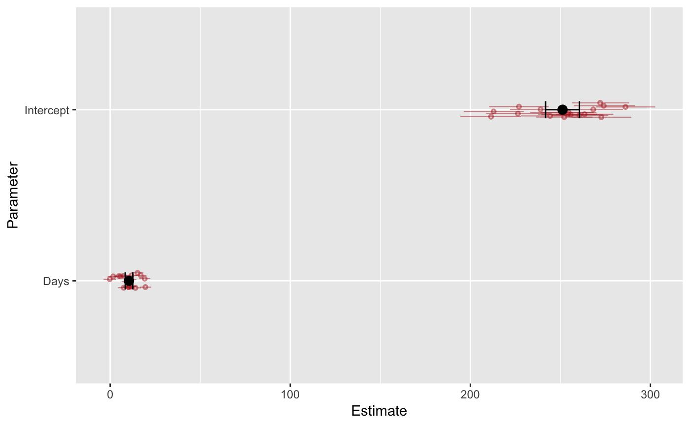
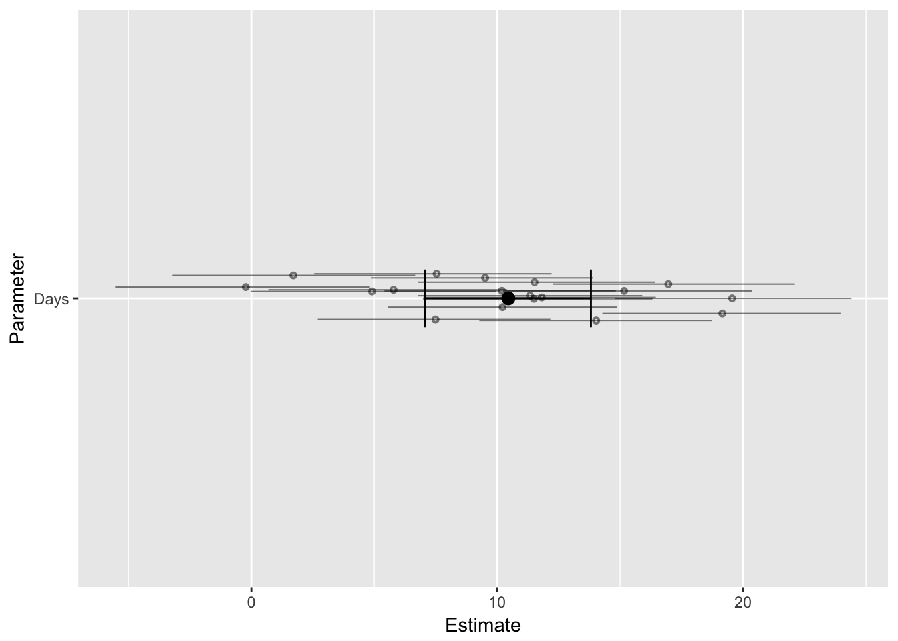
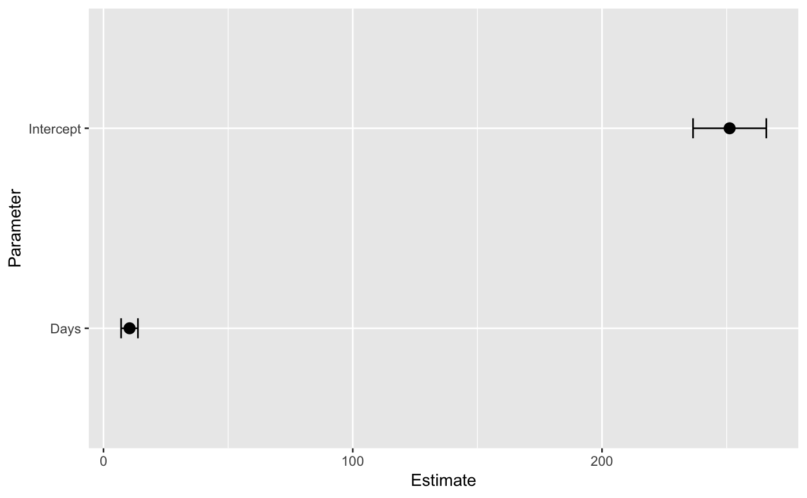

coefficient-plots.Rmdhead(fit_ml$data)
#> Reaction Days Subject
#> 1 249.5600 0 308
#> 2 258.7047 1 308
#> 3 250.8006 2 308
#> 4 321.4398 3 308
#> 5 356.8519 4 308
#> 6 414.6901 5 308summary(fit_ml)
#> Family: gaussian
#> Links: mu = identity; sigma = identity
#> Formula: Reaction ~ Days + (Days | Subject)
#> Data: sleepstudy (Number of observations: 180)
#> Samples: 4 chains, each with iter = 2000; warmup = 1000; thin = 1;
#> total post-warmup samples = 4000
#>
#> Group-Level Effects:
#> ~Subject (Number of levels: 18)
#> Estimate Est.Error l-95% CI u-95% CI Eff.Sample Rhat
#> sd(Intercept) 26.67 6.78 15.38 42.84 1595 1.00
#> sd(Days) 6.54 1.51 4.12 9.89 1254 1.00
#> cor(Intercept,Days) 0.10 0.30 -0.48 0.69 918 1.00
#>
#> Population-Level Effects:
#> Estimate Est.Error l-95% CI u-95% CI Eff.Sample Rhat
#> Intercept 251.19 7.47 236.52 265.91 1850 1.00
#> Days 10.46 1.70 7.05 13.81 1525 1.00
#>
#> Family Specific Parameters:
#> Estimate Est.Error l-95% CI u-95% CI Eff.Sample Rhat
#> sigma 25.92 1.54 23.09 29.09 3140 1.00
#>
#> Samples were drawn using sampling(NUTS). For each parameter, Eff.Sample
#> is a crude measure of effective sample size, and Rhat is the potential
#> scale reduction factor on split chains (at convergence, Rhat = 1).A coefficient plot is a visual replacement of a table summarizing a fitted model’s parameters. brmstools’ coefplot() draws population-level and group-specific parameter means and credible intervals on the same plot.

Users can plot a single parameter by naming it:

Or only the population-level / group-specific parameters:
